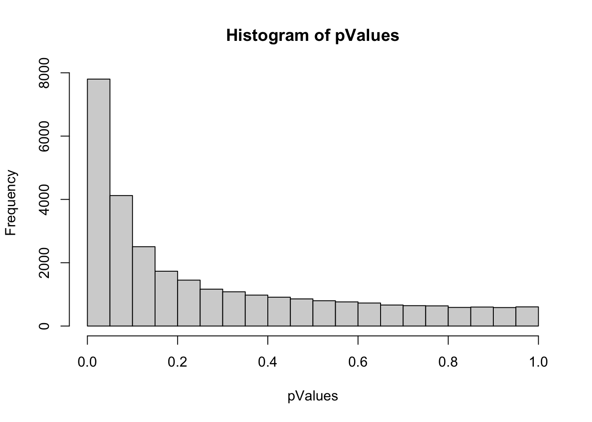
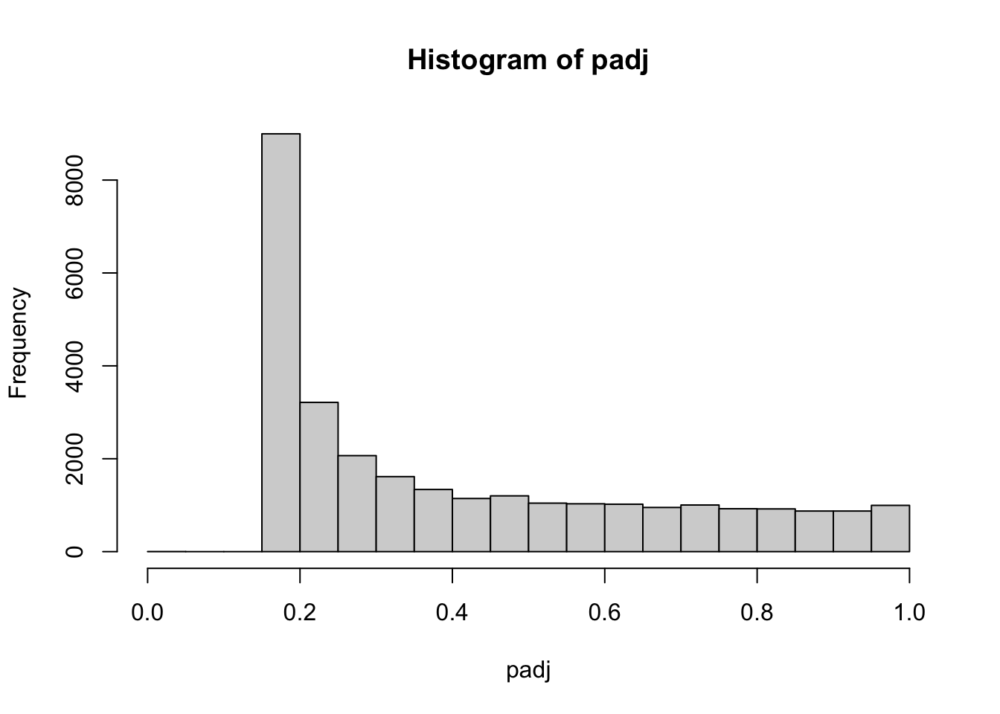

Chapter 3 Statistical Procedures
3.1 T-Test
One of the most basic statistical procedures we can perform on this dataset is a set of t-tests to test for differences between the two treatment groups (exposed and unexposed) across each of the genes. One way to do this is to use a loop and test each gene individually, saving the p-value from the t-test into a separate dataframe. Another solution is to use the build in “apply” function. This function will return results obtained by applying a specified function (the “t.test” function) to the margins of our dataset.
#Use ge.data dataset
#use the t.test function comparing treated and untreated samples
#1 specifies to apply the function to rows
pValues <- apply(ge.data, 1, function(x) t.test(x[treated],x[untreated])$p.value);
#We can look at a histogram of the pvalues to see distribution
hist(pValues);
Now we have a list of p-values for t-tests for each gene comparing the treated and untreated samples. Because we have run many, many tests (one for each gene), we need to adjust the p-values to correct for multiple testing. We will use an FDR correction using the “p.adjust” function.
#Adjust p-values
padj = p.adjust(pValues, method="fdr");
#Let's look at a histogram of these new values
hist(padj);
#We can also list the smallest 10 p-values
#First we need to sort the list
padj.sorted = sort(padj);
#Now we can view it
knitr::kable(
padj[1:10], caption = '10 Adjusted p-values, sorted',
booktabs = TRUE
)| x | |
|---|---|
| 10700001 | 0.1713985 |
| 10700002 | 0.2683722 |
| 10700003 | 0.1664339 |
| 10700004 | 0.1664339 |
| 10700005 | 0.1664339 |
| 10700006 | 0.6812546 |
| 10700007 | 0.5660878 |
| 10700008 | 0.4958739 |
| 10700009 | 0.1915826 |
| 10700010 | 0.2116867 |
After running the t-tests and adjusting them for multiple testing, we can see that we have two p-values that are still significant. These p-values belong to gene ids 10837582, 10783648. We can look up information on these genes using the tables provided on the Platform GPL6247 page.